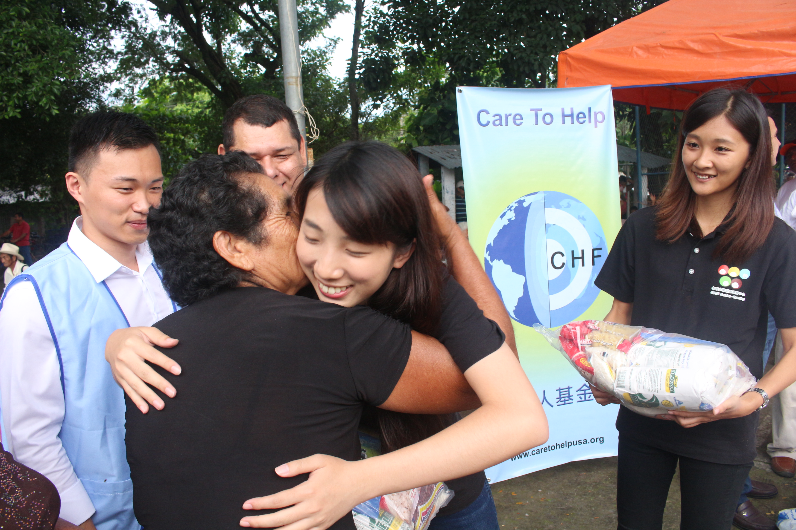

【03/28 從海外服務解鎖刻板印象】
#薩爾瓦多 #顛覆傳統 #不一樣的大學生活
【應外系 吳蕙羽】
看見薩爾瓦多，你的第一印象是什麼呢?
可能你從沒聽過、可能你不知道它在地球上的哪個位置、
可能你因為咖啡而聽過薩爾瓦多、也可能因為負面的治安新聞而對薩爾瓦多有了印象
但也因為這麼多的”可能”，反應了我們對於薩爾瓦多的不了解。
曾經，我也帶著既定的印象出發。
到了當地從踏進機場的一刻起，眼前所見卻與那想像中的薩爾瓦多截然不同，
深入在當地生活之後，更是被許多當地的特色深深吸引著。
或許我們從沒想過去薩爾瓦多，
但我們可以用這兩小時的時間，讓自己享受薩爾瓦多的精采生活。